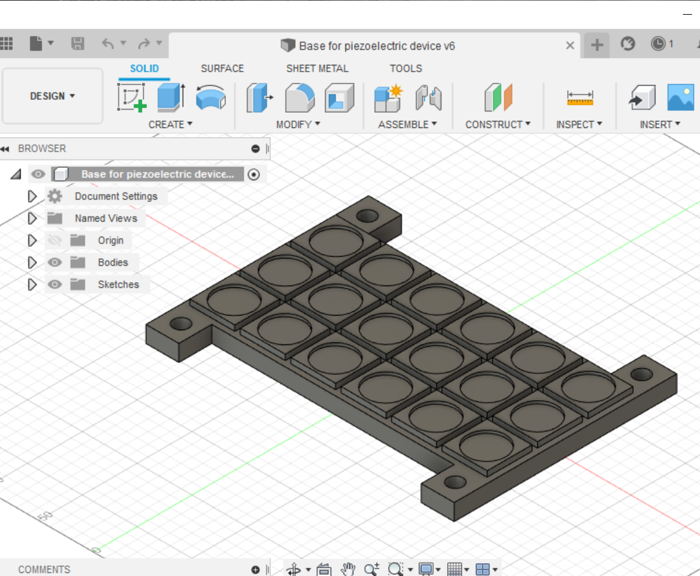
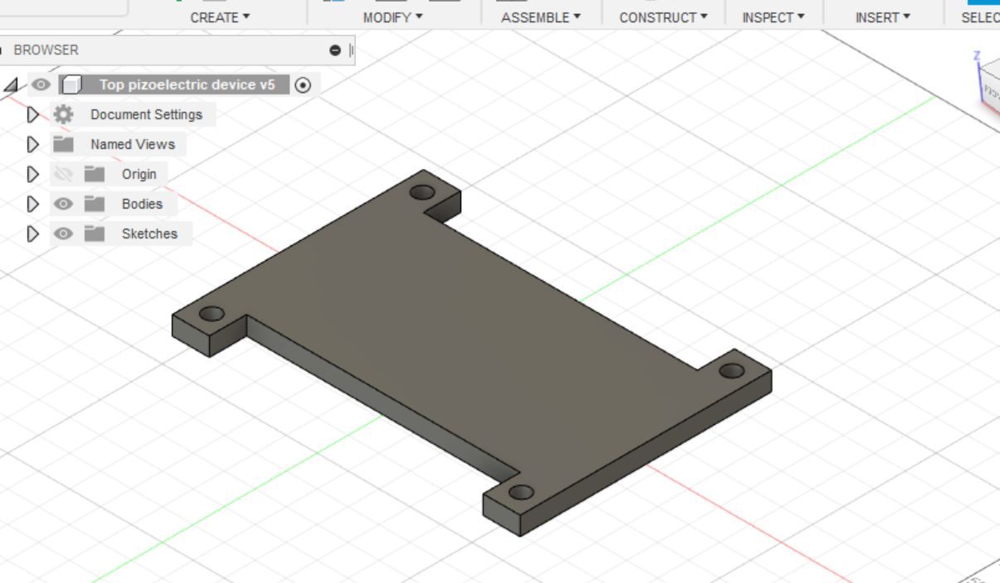

Description page Piezo Electric Project
Wake Technical Community College January 2021-May 2021 Raleigh, NC Undergrad Research (START) START Project Piezo Electric device
- Modeled an apparatus using Fusion 360.
- 3D printed parts of apparatus using school 3D printer.
- Overhaul parts needed for apparatus because of inaccurate dimensions during 3D sketching.
- Worked alongside professors during project to wire, breadboard and perform measurement during project.
- Made a final symposium using PowerPoint.

